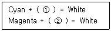
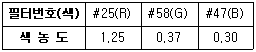
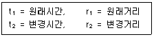

인쇄산업기사 (2006-05-14 기출문제)
1과목: 인쇄공학
1. 종이의 습도를 인쇄실의 습도와 균형을 맞추는 작업은?
- 시즈닝
- 사이징
- 초지
- 카렌딩
(정답률: 알수없음)

2. 오프셋인쇄에서 인쇄 뜯김 현상의 발생 원인과 가장 거리가 먼 것은?
- 잉크의 택(Tack)이 높다.
- 종이의 표면강도가 약하다.
- 잉크 공급이 많다.
- 인쇄 속도가 빠르다.
(정답률: 알수없음)
3. 바탕색을 먼저 인쇄한 후 시간이 경과 되면 잉크 피막이 완전히 건조되어 다음 색을 인쇄할 때 잉크가 잘 오르지 않는 현상은?
- 결정화(Crystallization)
- 덧쌓임(Piling)
- 응집(Flocculation)
- 소름 얼룩(Mottling)
(정답률: 알수없음)
4. 인쇄 잉크는 어느 정도 이상의 힘을 가해야만 유동이 일어나는데, 유동을 일으키기 위한 최저의 힘을 무엇이라고 하는가?
- 항복값
- 감마값
- 표면장력
- 틱소트로피
(정답률: 알수없음)
5. 연평균 근로자수가 200명인 인쇄공장에서 1년 동안 3명의 사상자가 발생하였다. 이 때의 연천인율은?
- 1.5
- 15
- 50
- 500
(정답률: 알수없음)
6. 양장 제책에서 책등 양 끝의 귀를 만드는 작업은?
- 굳힘(gluing
- 배킹(backing)
- 마블(marble)
- 라운딩(rounding)
(정답률: 알수없음)
7. 표지의 등과 속장이 떨어져 있어 책등의 손상이 적은 편이며 책을 펼치기 손쉬워 일반적으로 많이 사용하는 책등 처리 방식은?
- 타이트 백(Tight back)
- 홀로우 백(Hollow back)
- 플렉시블 백(Flexible back)
- 소프트 백(Soft back)
(정답률: 알수없음)
8. 인쇄 실 습도가 40% 이내일 때 주로 어떠한 장해가 발생 되는가?
- 정전기 발생
- 유화 현상
- 고스트 현상
- 트리핑 불량 현상
(정답률: 알수없음)
9. 플렉소 잉크나 그라비어 잉크는 정도가 오프셋 잉크에 비해 대단히 낮다. 이들 잉크의 유동 특성은?
- 뉴톤 유동(Newtonian flow)
- 의소성 유동(Pseudoplastic flow)
- 딜라턴트 유동(Dilatant flow)
- 소성 유동(Plastic flow)
(정답률: 알수없음)
10. 일반적인 평판 오프셋용 잉크의 성질과 가장 가까운 것은?
- 점성 응답만을 한다.
- 탄성 응답만을 한다.
- 점탄성 응답을 한다.
- 점성과 탄성 응답을 하지 않는다.
(정답률: 알수없음)
11. 인쇄 도중 인쇄 잉크의 택(tack) 변화와 가장 거리가 먼 것은?
- 콤파운드의 첨가량
- 드라이어 및 사이징제의 첨가량
- 기계의 속도
- 온도
(정답률: 알수없음)
12. 인쇄판에 이물질이 붙어서 그 주위가 윤곽 상태로 화선이 빠지는 현상은?
- 프로큐레이션(procuration)
- 블리딩(bleeding)
- 히키(hicky)
- 초킹(chalking)
(정답률: 알수없음)
13. 인쇄 색의 순서를 정할 때 고려해야 할 사항 중 가장 옳은 것은?
- 잉크 중 안료의 입도 분포와 비히클의 투명성을 고려하여 정한다.
- 먼저 인쇄하는 잉크보다 뒤에 인쇄하는 잉크의 택을 높게 조정한다.
- 잉크의 건조 속도는 고려하지 않는다.
- 다색기, 단색기의 구분은 고려 사항이 아니다.
(정답률: 알수없음)
14. 잉크 중 안료 입자의 평균 크기와 분포곡선이 용지의 모세관 평균 직경 및 그 분포곡선 보다 큰 경우, 비히클만 용지 속으로 들어간다. 이 때 가장 예측되는 현상은?
- 블리딩(Bleeding)
- 초킹(Chalking)
- 히키(Hicky)
- 블로킹(Blocking)
(정답률: 알수없음)
15. 액체가 힘을 주지 않은 상태에서 자연적으로 고체 전역 또는 다른 액체 전역에 퍼지는 현상은?
- 배향
- 포이즈
- 점도
- 젖음
(정답률: 알수없음)
16. 백지에 민자(solid) 인쇄를 하고 건조한 후 20 ~50℃에서 2% 를 황산 수용액에 적신 다음, 종이 및 용액의 색변화 정도를 평가하는 시험법은?
- ph측정
- 흡수도
- 내산성
- 내광성
(정답률: 알수없음)
17. 인쇄물 표면에 비닐필름입히기(Vinyl film laminating)를 하였는데 미세한 기포가 많이 발생하였다. 그 주된 원인은?
- 인쇄물 표면에 파우더(Powder)가 남아 있기 때문에
- 비닐필름에 심한 주름이 생겼기 때문에
- 인쇄물의 두께가 너무 두꺼워서
- 인쇄 용지에 구겨진 자국이 많아서
(정답률: 알수없음)
18. 장합에 대한 설명 중 틀린 것은?
- 낱장인쇄물을 순서에 따라 모으는 작업이다.
- 순서대로 늘어놓은 접장이나 낱장을 손으로 빼거나 접지기, 패킹기, 코팅기를 사용하는 방법이 있다.
- 대수가 많을 때는 분할해서 접지 모음을 한 다음, 다시 한 번 합쳐 1권을 합친 접지 모음 방법을 사용하기도 한다.
- 장합은 중복, 빠짐, 뒤바뀜 등의 사고가 일어나지 않아야 한다.
(정답률: 알수없음)
19. 전단응력이 낮은 곳에서 볼 수 있는 인쇄 잉크의 작업성으로 실과 같이 길게 늘어나는 인쇄 잉크의 성질은?
- 예사성
- 요변성
- 탄성
- 컬링
(정답률: 알수없음)
20. 컬러 인쇄물을 정확하게 판정하기 위한 광원 중 자연광의 색온도에 가장 가까운 것은?
- 1,000 ~ 1,500K
- 2,500 ~ 3,000K
- 3,500 ~ 4,000K
- 5,500 ~ 6,000K
(정답률: 알수없음)
2과목: 인쇄재료학
21. 섬유 사이의 결합을 방해하는 소수성으로 화학펄프 제조 시 제거하면 양질의 펄프를 얻을 수 있는 것은?
- 피브릴(fibril)
- 리그닌(lignin)
- 셀룰로오즈(cellulose)
- 헤미셀률로오즈(hemicellulose)
(정답률: 알수없음)
22. 정착액의 주성분(정착주약)으로 사용되고 있는 것은?
- 티오황산나트륨(Na2S2O3)
- 아황산나트륨(Na2SO3)
- 탄산나트륨(Na2CO3)
- 수산화나트륨(NaOH)
(정답률: 알수없음)
23. 일반적인 그라비어 잉크의 특성에 대한 설명 중 옳은 것은?
- 점도가 높고 예사성이 길며 기름기가 많은 잉크
- 점도가 낮고 예사성이 길며 기름기가 많은 잉크
- 택이 강하고 점도가 낮은 잉크
- 점도가 낮고 예사성이 짧은 잉크
(정답률: 알수없음)
24. 지지체 쪽에서 노출이 가능한 좌우 반전 촬영용 필름으로 판식에 따라 용도에 맞추어 선택, 촬영할 수 있는 것은?
- 듀플리케이팅 필름
- 스트리핑 필름
- 클리어 백 필름
- 오코스크린 필름
(정답률: 알수없음)
25. 정착제로 이용되는 물질에 대한 구비 조건이라고 볼 수 없는 것은?
- 현상 후 은 화상을 침투하지 않을 것
- 정착이 장 시간 동안 천천히 진행될 것
- 젤라틴 막을 오염시키거나 손상시키지 않을 것
- 현상책의 알칼리와 반응하여 침전물을 생성하지 않을 것
(정답률: 알수없음)
26. 사진 감광재료의 특성곡선을 표시하는데 필요한 2가지 요소는?
- 노출시간과 현상시간
- 투과율과 파장
- 농도와 빛 쬠량
- 농도와 파장
(정답률: 알수없음)
27. 유기안료와 비교하여 무기안료의 단점에 해당 되는 것은?
- 색상의 선명도
- 내광성
- 내용제성
- 내열성
(정답률: 알수없음)
28. 축임물 중 이소프로필알콜(I.P.A)을 사용할 때의 장점이 아닌 것은?
- 표면장력이 낮고 축임물의 엷은 막을 형성한다.
- 축임물의 냉각 효과가 있다.
- 설치비 및 운영비가 저렴하다.
- 증발속도가 빠르고 종이 면에서 잉크의 건조가 빠르다.
(정답률: 알수없음)
29. 현상액 중에서 현상 주약으로 사용되는 약품에 대한 설명 중 옳은 것은?
- 하이드로퀴논은 브롬화칼륨과 온도의 영향이 적고 콘트라스트가 약한 성질을 가진다.
- 하이드로퀴논은 경조용 현상액의 현상주약으로 많이 사용되며, 메톨과 함께 MQ 현상액으로 사용된다.
- 메톨은 브롬화칼륨과 온도의 영향을 받기 쉽고 콘트라스트가 강한 성질을 가진다.
- 페니톤은 보존성과 내구성이 좋지 않으며 콘트라스트가 강한 성질을 가지고, 억제제의 영향을 많이 받는다.
(정답률: 알수없음)
30. 자성 잉크의 사용 분야가 아닌 것은?
- 신용카드
- 통장
- 고속도로 통행권
- 복사용 전표
(정답률: 알수없음)
31. 잉크의 택(tack)과 관련 있는 인쇄용지의 강도 특성과 가장 관계 깊은 것은?
- 표면강도
- 파열강도
- 내절강도
- 인장강도
(정답률: 알수없음)
32. 할로겐화은 결정 고유의 감광 파장 영역은?
- 200nm이하
- 200~ 340nm
- 350~480nm
- 495~700nm
(정답률: 알수없음)
33. 비이온 계면 활성제에 속하지 않는 것은?
- 고급 알코올 에틸렌옥시드
- 지방산의 에틸렌옥시드
- 모노글리세리드
- 라우릴산나트륨
(정답률: 알수없음)
34. 무용제 잉크이므로 대기 오염이 없고 화재, 폭발 등에 대한 안정성이 크며 인쇄물에서 냄새가 나지 않는 특수잉크는?
- 플렉소그랙픽 잉크
- 스크린 잉크
- 자성 잉크
- 자외선 경화 잉크
(정답률: 알수없음)
35. 종이의 제조공정 중 표면가공에 대해서 가장 옳게 설명한 것은?
- 종이의 섬유 위에 안료를 접착제로 도포하며 광택을 내는 공정
- 섬유를 얇은 층으로 늘어놓은 공정
- 섬유에 함유된 물을 탈수시키는 공정
- 찢김, 더러움, 얼룩짐 등 결점이 있는 종이를 제거하기 위한 공정
(정답률: 알수없음)
36. 잉크의 작용성 및 점착성을 개선하고 뒤묻음, 비침, 뜯김 등의 사고를 없애주고 플라잉(flying)이나 미스팅(misting)을 줄여주기 위해 첨가하는 물질은?
- 용제
- 건조제
- 합성수지
- 컴파운드
(정답률: 알수없음)
37. 사진 현상 재료 중 필름현상액의 보항제로 사용되는 것은?
- 아황산나트륨
- 메톨
- 하이드로퀴논
- 탄산나트륨
(정답률: 알수없음)
38. 축임물에 첨가되는 계면활성제에 대한 설명 중 틀린 것은?
- 음이온 계면활성제는 금속 표면에 흡착되어 표면을 친유성으로 변화시킨다.
- 잉크에 함유되는 지방산이 축임물 표면에 단분자층막으로 확장하는 것을 방지한다.
- 인쇄 정지 때 잉크 성분의 비화선부 흡착에 의한 바탕 더러움을 방지한다.
- 분자 중에 친유성기와 친수성기를 함께 가지는 물질이다.
(정답률: 알수없음)
39. 종이에 적당한 소수성을 갖도록 섬유를 아교, 수산화나트륨, 송진, 녹말, 규산, 합성수지 드의 콜로이드 물질로 처리하는 과정은?
- 비팅(beating)
- 사이징(sizing)
- 전충(loading)
- 코팅(coating)
(정답률: 알수없음)
40. 종이는 외부의 습도가 높으면 흡습하고 외부의 습도가 낮으면 탈습하여 평형상태를 이루게 된다. 또한 동일한 외부 습도에서도 흡습 때와 탈습 때의 종이 수분 함유량이 다르게 되는데 이러한 현상과 관련이 있는 것은?
- 종이의 히스테리시스
- 종이의 사이징
- 종이의 표면강도
- 종이의 시즈닝
(정답률: 알수없음)
3과목: 인쇄색채학
41. 명도에 관한 설명 중 틀린 것은?
- 색의 밝고 어두운 정도를 말한다.
- 물리적으로는 시감반사율의 고저를 말한다.
- 무채색은 시감반사율의 고저와 상관없이 명도는 같다.
- 인간의 눈은 색의 3속성 중 명도에 관한 감각이 가장 예민하다.
(정답률: 알수없음)
42. 오스트발트(Ostwald) 표색체계에 의한 표색기호 3Yne에서 e는 무엇을 나타내는가?
- 순색량
- 흰색량
- 검정색량
- 색상
(정답률: 알수없음)
43. 다음 식은 색광일 경우에 보색 관계를 나타낸 식이다. ①과 ②에 알맞은 색은?

- ① Red, ② Green
- ① Green, ② Blue
- ① Blue, ② Green
- ① Green, ② Red
(정답률: 알수없음)
44. 하나의 색이 다른 색에 둘러싸여 있을 때 둘러싸인 색이 주위의 색에 닮아 보이는 현상은?
- 색각항상(色覺恒常)
- 유도색(誘導色)
- 피유도색(被誘導色)
- 동화효과(同化效果)
(정답률: 알수없음)
45. 조명의 밝기나 분광분포가 변화하여도 우리가 인지하는 색이나 밝기가 변화하지 않는 특성은?
- 색지각
- 항상성
- 고유 색상 자극
- 계시대비
(정답률: 알수없음)
46. 다음은 먼셀 표색계의 색입체 구조이다. 세로축은 무엇을 나타내는가?(정확한 내용을 아시는 분께서는 오류 신고를 통하여 내용작성 부탁드립니다. 정답은 2번입니다.)
- 채도
- 명도
- 색상
- 색도
(정답률: 알수없음)
47. 분광반사율이 다른 두 가지의 색이 어떤 광원 아래에서 같은 색으로 보이는 현상은?
- 연색성
- 색재현
- 조건등색
- 색지각
(정답률: 알수없음)
48. 명도가 다른 두 색이 서로 영향을 받아 밝은 색은 더 밝게 어두운 색은 더 어둡게 보이는 현상은?
- 색상 대비
- 채도 대비
- 연변 대비
- 명도 대비
(정답률: 알수없음)
49. 사람이 육안으로 가시광선 범위의 전 스펙트럼을 균일하게 포함하는 빛을 보았을 때 지각하는 색상은?
- Blue
- Gray
- White
- Black
(정답률: 알수없음)
50. 망막의 시세포의 일종으로 주로 어두운 곳에서 작용하고 명암 감각에 관계하는 것은?
- 추상체
- 간상체
- 수정체
- 글라스체
(정답률: 알수없음)
51. 어떤 색 잉크의 색 농도가 다음과 같을 때 이 잉크의 색은?

- 노랑(yellow) 잉크
- 마젠타(magenta) 잉크
- 시안(cyan) 잉크
- 녹색(green) 잉크
(정답률: 알수없음)
52. 유리컵 속의 포도주의 색과 같이 일정한3차원 공간을 가지고 있어 부피감을 느낄 수 있는 색은?
- 면색
- 표면색
- 공간색
- 경영색
(정답률: 알수없음)
53. 먼셀(Munsell) 표색체계에서 표면색을 분류할 때 요구되는 특정 시각 조건이 아닌 것은?
- 평균적인 주광(CIE ILL C)으로 조명한다.
- 조명을 45 〫로 배치(조명)한다.
- 색 표면에 대하여 수직 방향에서 관찰한다.
- 배경은 항상 검정색으로 한다.
(정답률: 알수없음)
54. 다음 색 중에서 굴절율이 가장 큰 색은?
- Blue
- Green
- Red
- Yellow
(정답률: 알수없음)
55. 색상에서 원색의 개념에 해당 되지 않는 것은?
- 더 이상 분광할 수 없는 색
- 다른 색광을 혼합하여 만들 수 없는 색
- 가시 광선 범위 내에서 원색을 모두 혼합했을 때 백색광이 되는 색
- 하나의 순수 색(흑색, 백색 포함)만을 가지는 색
(정답률: 알수없음)
56. 색도(色度)를 결정하는 색자극의 측색적 성질로만 연결된 것은?
- 주파장(또는 보색주파장)과 순도
- 색상과 시감반사율 (또는 규약반사율)
- 분광분포(또는 분광조성)와 3자극치
- 취도순도(또는 자극순도)와 명도
(정답률: 알수없음)
57. 밝은 곳에서 어두운 곳으로 옮겨 갈 때 빨간색은 더 어둡게, 파랑색은 더 밝게 보이는 현상은?
- 메타메리즘
- 색각현상
- 푸르킨예 현상
- 동화현상
(정답률: 알수없음)
58. 오스트발트의 유채색 혼합공식은?
- 백(W) + 흑(B) + 순색(C) = 100%
- 흑(B) + 적(R) + 백(W) = 100%
- 백(W) + 흑(B) = 1%
- 흑(B) + 백(W) +순색(C) = 10%
(정답률: 알수없음)
59. 보색에 대한 설명 중 틀린 것은?
- 가색혼합에서 두 색을 합하여 백색(White)이 되는 두 색광의 관계
- 감색혼합에서 두 색을 합하여 검정에 가까운 회색이 되는 두 색료의 관계
- 색차가 큰 두 가지 색광을 적절히 혼합하여 백색 스크린상에서 흑색으로 나타나면 이 두 색은 보색
- 두 가지의 다른 색종이를 적절한 넓이로 회전 원판을 이용하여 평균 혼합을 하였을 때 혼합색이 중성 회색이 되면 이 두 색은 보색
(정답률: 알수없음)
60. 먼셀 표색계의 5원색은? (단, R : red, Y : Yellow, G : Green, B :Blue, C : Cyan, M : Magenta, W : White, Bk : Black, P : Purple)
- R, Y, G, B, P
- R, C, W, B, G
- R, Y, C, M, B
- Y, Bk, C, M, G
(정답률: 알수없음)
4과목: 사진제판공학
61. 교정인쇄의 주 목적과 관계 없는 것은?
- 원고에 충실하게 재현 되었는가 확인
- 본 인쇄 견본 제작
- 거래처의 희망대로 레이아웃(lay out) 되었는가 확인
- 컬러(color) 인쇄물 대량 생산
(정답률: 알수없음)
62. 전자사진에서 주로 나타나는 효과로 넓은 부분의 화상에서 화상 주변부의 흑화도가 짙게 되고 중심부는 희게 되는 현상은?
- 에지(edge) 효과
- 상반칙불궤
- 사바티에(sabattier) 효과
- 코스틴스키(kostinsky) 효과
(정답률: 알수없음)
63. 일반적인 PC(personal computer)에 조판기능을 부여하여 출력기로 연결하는 체계와 가장 관계 깊은 것은?
- DTP
- PMT
- CCD
- scanner
(정답률: 알수없음)
64. 그라비어 제판시 부식에 영향을 주는 요인과 가장 거리가 먼 것은?
- 부식액의 비중
- 감광도
- 액의 산성도
- 액의 온도
(정답률: 알수없음)
65. 감광층에 입사한 빛이 유제 내부의 입자에 반사나 산란되어 그 주변부까지 감광이 되는 현상은?
- 이레디에이션
- 헐레이션
- 허셀효과
- 상반칙불궤
(정답률: 알수없음)
66. PS판 제판용 광원의 선택시 필요한 요건이 아닌 것은?
- 안정된 광량 및 안정성
- 분광 에너지 분포
- 광원의 세기
- 실내 조명성 및 인쇄기의 종류
(정답률: 알수없음)
67. 컬러 스캐너의 노출용 광원으로 피크치가 488nm 와 514.5nm인 아르곤(Ar) 레이져를 사용할 때 필름은 어떤 형을 사용하는 것이 가장 바람직한가?
- 레귤러(reguler)형
- 오르토크로매틱(orthochromatic)형
- 팬크로매틱(panchromatic)형
- 적외선(infra red)형
(정답률: 알수없음)
68. 사진 및 제판용의 감광물질이 노출에 의해 감광상태에 도달하는 속도(반응)를 수치로 나타낸 것은?
- 감색성
- 감광도
- 감광계
- 감도계
(정답률: 알수없음)
69. 다음 망점 네거티브 필름(Negative film)의 그래프 중에서 기본 주 노출 시간을 가장 많이 준 것은?(정확한 내용을 아시는 분께서는 오류 신고를 통하여 내용작성 부탁드립니다. 정답은 4번입니다.)
- ①
- ②
- ③
- ④
(정답률: 알수없음)
70. 스크린 제판법 중 직접감광 제판법에 비해 간접감광 제판법의 특징이 아닌 것은?
- 제판 비용이 비싸다.
- 작업이 간단하다.
- 신축성이 강하다.
- 정밀하고 선예한 판을 제작할 수 있다.
(정답률: 알수없음)
71. 컬러 스캐너의 노출용 광원으로 사용되는 것 중에서 광원의 피크치가 632nm 정도인 것은?
- He-Cd 레이져
- He-Ne 레이져
- Ar 레이져
- CCD
(정답률: 알수없음)
72. 입사광의 강도가 100, 필름을 투과한 후의 빛의 강도가 10인 어떤 필름이 있다. 이 필름의 투과농도는?
- 0.1
- 1.0
- 10
- 100
(정답률: 알수없음)
73. 교정인쇄 후 재현된 색의 측정방법과 관계가 없는 것은?
- 명도 측색법
- 혼합 등색법
- 색상 등색법
- 분광 측색법
(정답률: 알수없음)
74. 광원의 거리를 조절하고 자 할 때 빛쬠 시간도 변화를 주어야 한다. 이 때의 공식으로 맞는 것은?

- t2 = (r2/r1)2 × t1
- t2 = (r1/ r2)2 × t1
- t2 = (r2/r1) × t1
- t2 = (r1/r2) × t1
(정답률: 알수없음)
75. 회전도포기로 감광액을 도포할 때 감광막의 두께를 조절하기 가장 쉬운 방법끼리 짝지어진 것은?
- 회전속도-감광액 점도
- 감광액량-건조시간
- 회전기내 습도-판의 두께
- 감광액 도포 위치-중크롬산염 종류
(정답률: 알수없음)
76. 입상성에 대한 설명 중 틀린 것은?
- 필름의 감광도가 높은 필름 일수록 입자는 거칠다.
- 현상액의 온도가 높을 수록 입자가 고와지고 입상성이 좋아진다.
- 현상액의 pH가 높을 수록 입상성은 나빠진다.
- 현상시간이 지나치게 길면 입상성은 나빠진다.
(정답률: 알수없음)
77. 컬러스캐너에서 샤프니스(sharpness)를 증가시키는 방법이 아닌 것은?
- 언샤프 마스크(unsharp mask, USM)
- 피킹(peaking)
- 디프렌셜 마스크(differential mask, DM)
- 메인 그라데이션(main gradation)
(정답률: 알수없음)
78. 제판 작업시 광원의 거리가 가까울수록 나타나는 현상과 가장 거리가 먼 것은?
- 중앙 부분과 주변부와의 광량차가 크다.
- 작업능률이 좋으며 망점 재현이 좋다.
- 판 중심부의 빛쬠 과다 현상이 나타난다.
- 판 주변부는 빛쬠 부족 현상이 나타난다.
(정답률: 알수없음)
79. 스캐너 계조수정회로의 하이라이트리미터(highlightimitter)에 대한 기능으로 옳은 것은?
- 하이라이트에서 섀도에 걸쳐 망점의 상태 변화 결정
- 화상 경계 부분의 윤곽을 강조
- 하이라이트부의 어떤 농도 부분에서 더욱 밝은 부분까지 균일한 망점을 넣는 기능
- 하이라이트쪽에서 미들톤 부분까지의 망점을 더욱 강조
(정답률: 알수없음)
80. 연속계조의 포지티브 필름에 백선스크린과 카본티슈를 사용하며, 잉크 홈의 면적이 같고 깊이가 다른 오목한 점으로 농담을 표현하는 그라비어 제판법은?
- 산분식 그라비어
- 컨벤셔널 그라비어
- 망점 그라비어
- 전자조각 그라비어
(정답률: 알수없음)